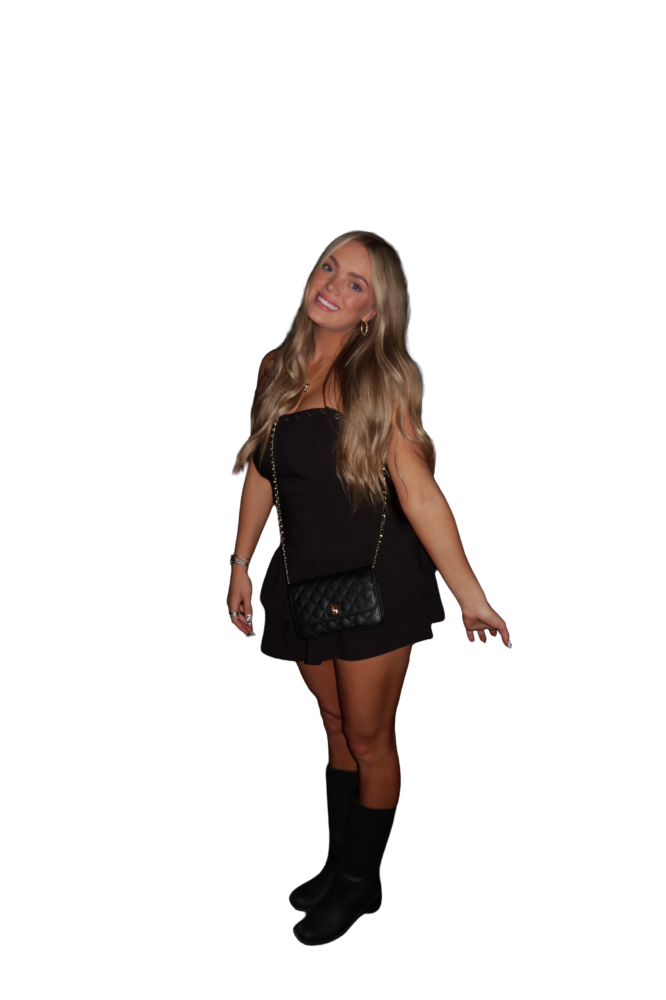

Hi!! I'm Chanel — your go to marketing girly
I'm a creative and strategic thinker who loves turning ideas into content that actually connects. I recently graduated from Utah Valley University with my degree in Digital Marketing, Spring 2026, and I'm currently continuing my education to earn my Accounting degree, finishing Spring 2027.
I know… marketing and accounting might sound like a random combo, but it's honestly my favorite thing about what I do. I bring both the creative side and the analytical side, which means I don't just make things look good, I make sure they work.
At Stumble, I serve as Head of Communications and Creative Director, where I lead brand voice, content strategy, and overall creative direction. I also plan events, manage outreach to potential ambassadors, and help build meaningful partnerships as the brand continues to grow. Being part of a startup has given me the opportunity to be hands on in so many areas and truly help shape how the brand shows up and connects with its audience.
I also have a strong background in leadership through my experience as a director at The Pointe, where I taught dance and worked closely with students to build confidence, discipline, and performance skills.
I'm all about content that feels real, storytelling that connects, and strategies backed by data. Best of both worlds always.
If you're looking for someone who's creative, driven, and a little bit obsessed with making things better… hi, that's me.